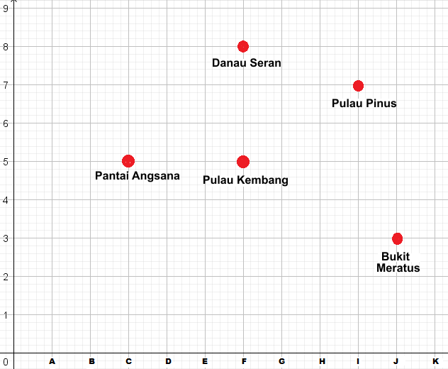

-
Tujuan Pembelajaran:
- Siswa dapat menentukan posisi tempat pada bidang koordinat
- Siswa dapat menentukan posisi titik pada bidang koordinat
- Siswa dapat menentukan bangun datar yang dibentuk dari titik koordinat
Setelah mengetahui apa itu Sistem Koordinat dan penerapannya dalam kehidupan sehari-hari, kita akan belajar cara membaca posisi tempat pada bidang koordinat

Masalah 1.1 : Perhatikan gambar berikut ini!
Gambar 1.1 memperlihatkan tempat-tempat objek wisata alam yang terletak di Kalimantan Selatan telah ubah menjadi bidang koordinat sederhana. Sumbu mendatar diberi kode huruf dan sumbu tegak diberi kode bilangan.

Bagaimana cara menentukan posisi objek wisata alam yang ada di Kalimantan Selatan pada bidang koordinat?

Dari gambar bidang koordinat Gambar 1.1 kita dapat menentukan:
- Posisi Pantai Angsana pada bidang koordinat,
- Posisi Pulau Kembang pada bidang koordinat,
- Posisi Danau Seran pada bidang koordinat,
- Posisi Pulau Pinus pada bidang koordinat,
- Posisi Bukit Meratus pada bidang koordinat.

Untuk menentukan posisi tempat pada bidang koordinat pada Gambar 1.1 ikuti langkah-langkah berikut ini:
untuk lebih jelasnya mari simak animasi berikut ini, klik tombol mulai untuk memulai animasi
- Klik tombol bendera hijau kemudian tekan mulai pada animasi dibawah ini untuk memulai.
- Tunggu beberapa saat apabila animasi belum muncul

Kerjakan latihan soal berikut ini!
-
Petunjuk:
- Isikan jawaban anda pada kolom yang kosong.
- Tekan tombol cek untuk mengecek jawaban.
- Tekan tombol 1,2,3,4,5 di bawah soal untuk mengganti ke nomor selanjutnya
Tentukan posisi Apotek, Terminal, Sekolah, Lapangan dan Pasar dengan mengisi kolom yang kosong di bawah ini!